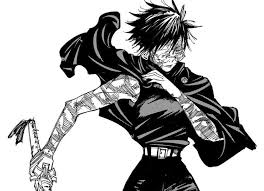

Satoru Gojo, Mais conehcido como o mais forte do universo de jujutsu kaisen (era moderna, porém após a luta do sukuna ficou claro que ele era o mais forte de todas as eras). Gojo mesmo sendo o mais forte e sendo muito carismatico ele carrega o fardo de lidar com uma solidão extrema e carregando o peso das mortes do seu amigo. Esse é o mais honrado

Yuji Itadori, é o receptaculo da maldição chamada Sukuna, apos sukuna sair do corpo de yuji itadori ele possui o corpo de megumi , apos isso o yuji desenvolveu a tecnica do santuario e a manipulaçao de sangue a depressao do yuji começou com a morte de jumpei e logo apos ele desenvolveu mais traumas no incidente com a morte de nobara e nanami
Maki Zenin é uma das personagens mais incríveis de Jujutsu Kaisen, conhecida por sua determinação inabalável e força brutal. Ela vem de um dos clãs mais poderosos do mundo Jujutsu, o Clã Zenin, mas foi rejeitada por não ter energia amaldiçoada. Após sua evolução, Maki retorna e massacra o Clã Zenin, eliminando praticamente todos os membros e acabando com a estrutura opressora do clã. Nesse momento, ela se torna uma das personagens mais poderosas da série.